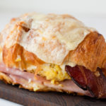
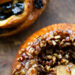
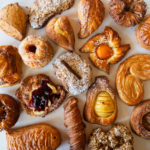
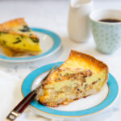

|  |  |  |  |
Édes és finom |
Gazdag és sós |
Vajas kifliA francia klasszikus alapján hagyományos croissant-junk egy könnyű, pelyhes reggeli tészta, csodálatos vajízzel. Próbáld ki a Pain au csokoládét is - vajas croissant-junk gazdag étcsokoládéval. |
Sonkás és sajtos kifliEz a sós reggeli fekete-erdei stílusú sonkát és svájci sajtot tartalmaz, croissant-tésztánkra rétegezve, egy kis béchamellel. |
Dán krémsajtFinom dán tészta, amelyet némi fahéjjal és cukorral laminálnak, krémsajt töltelékkel kiegészítve szezonális gyümölcsöntettel kész. |
Spenótos kifliAzok számára, akik reggelire szeretnének egy kis zöldséget, gazdag és vajas croissant tésztánk házi tejszínes spenót és feta sajt réteggel. |
KugelhopfEz a vásárló kedvence édes, dúsított tésztát tartalmaz, amelyet megsütnek, bőségesen fürdenek rumvajban, és vanília-cukor keverékben tekerccsel készítik. |
Junction CroissantEgész nap reggeli, rántottával, sonkával, szalonnával és fehér cheddarral, béchamellel öltözve. |
Dán körte vagy sárgabarackNagyon pelyhes és ízes péksütemény, amely tele van tésztakrémmel és finom körtével vagy barackos felével. |
Gyors kenyér és csemegeA harapnivalók és a kávészünetek kedvencei, gyors kenyerünk egészben vagy szeletenként kapható. Jelenlegi változatunk a következőket tartalmazza: Csokoládé kenyér Vanília font torta Kávé torta Zebra kenyér Banán kenyér Mézes-pekándió pogácsa (csak darabonként) Áfonya / citromos pogácsa |
CsokoládéS kifliKlasszikus kifli csokoládéval és apróra vágott csokoládéval. |
|
Kétszer sült mandula és csokoládés-mandula kifliNem a hagyományos almandin, a sűrű és finom kétszer sült egy vajas kifli vagy pain au csokoládé, amelyet megfeleztek, egyszerű szirupba mártottak, mandulakrémmel és reszelt mandulával töltötték meg. A névrokona második sütése után a Kétszer Sültet porcukorporral befejezzük. |
|